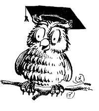

Презентация-резюме
Исайчев Данила Олегович
Презентация-резюме
© John Carey
Образование
2017г. окончил ДМШ №3 г. Тольятти по специальности скрипка
2019г. окончил обучение в инженерном классе МБОУ «Лицее № 19» городского округа Тольятти
2019г. поступил в РГПУ им.А.И.Герцена

МБОУ «Лицей № 19» городского округа Тольятти
Основные навыки
Программирование на языке Pascal
Программирование на языке C++
Создание сайтов с помошью HTML И CSS
Игра на скрипке
Игра на фортепиано
Основные достижения
Лауреат XII Всероссийских юнешеских научных чтений им. С.П.Королёва
Победитель олимпиады СГСПУ по информатике
Участник межрегионального форума «СОЗВЕЗДИЕ IQ» - Самарский НАНОГРАД
II мужской разряд по лыжным гонкам